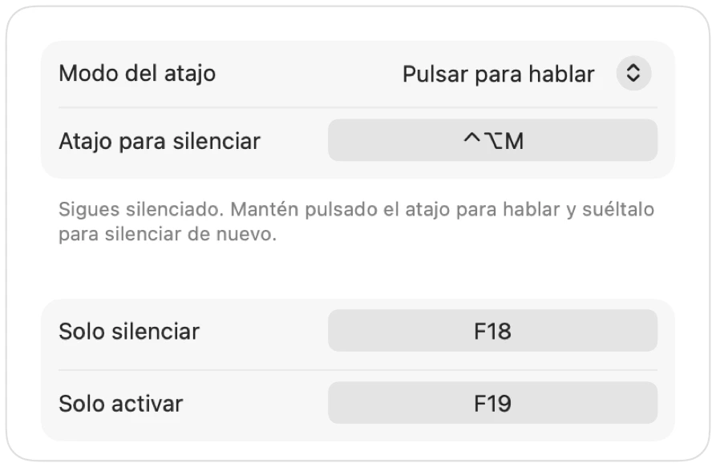

Pulsar para hablar en el Mac, en cualquier app
La función de pulsar para hablar te mantiene silenciado hasta que mantienes pulsada una tecla. Es la forma más cómoda de evitar ruidos en reuniones de teletrabajo, pero muy pocas apps la ofrecen y cada una usa una tecla diferente.
Muffle añade la función de pulsar para hablar a cualquier app de tu Mac. Elige «Pulsar para hablar» en Ajustes, mantén pulsado el atajo para hablar y suéltalo para volver a silenciar.
Cómo usar pulsar para hablar
- 1
Instala Muffle.
- 2
En Ajustes de Muffle, cambia «Modo del atajo» a «Pulsar para hablar».
- 3
Mantén pulsado Control-Opción-M mientras hablas.
- 4
Suéltalo. Volverás a estar silenciado.

- ¿Prefieres una sola tecla? Configura una tecla para hablar en Ajustes: ⌥ derecha, fn o un botón adicional del ratón.
- Elige un atajo cómodo en Ajustes de Muffle, por ejemplo una tecla F.
Preguntas frecuentes
¿Funciona pulsar para hablar en Google Meet?
Sí. Muffle silencia el micrófono directamente, así que funciona en Google Meet, Zoom, Teams, Discord y cualquier otra app.
¿Se puede pulsar para silenciar?
Sí. Elige «Pulsar para silenciar» y mantén pulsado el atajo para silenciar un momento, como un botón para toser.